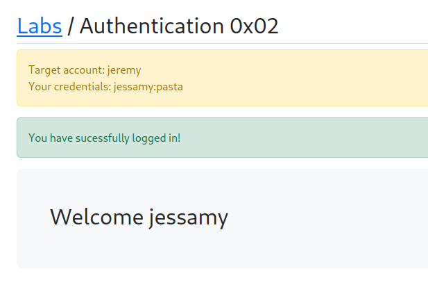

In particular the checklists are designed to not just give you a bunch of things:
Test this payload but....
It's designed to kind of spark ideas. Think of different attacks and different approaches so that when you find a vulnerablity you have a better chance of exploiting it.
Mentor Resource:
https://appsecexplained.gitbook.io/appsecexplained/common-vulns/authentication/attacking-mfa


There are 2 approaches:
1st editing the username
2nd bruteforoce the mfa code as it's not that long from
000-000 to 999-999
Will simply change the username to jeremy once the request is being intercept
we can either forward/drop/intercept to off and it will automatically forwards all the queued requests.

I turn the intercept off my request goes with jessamy and not with jeremy as the mentor said.